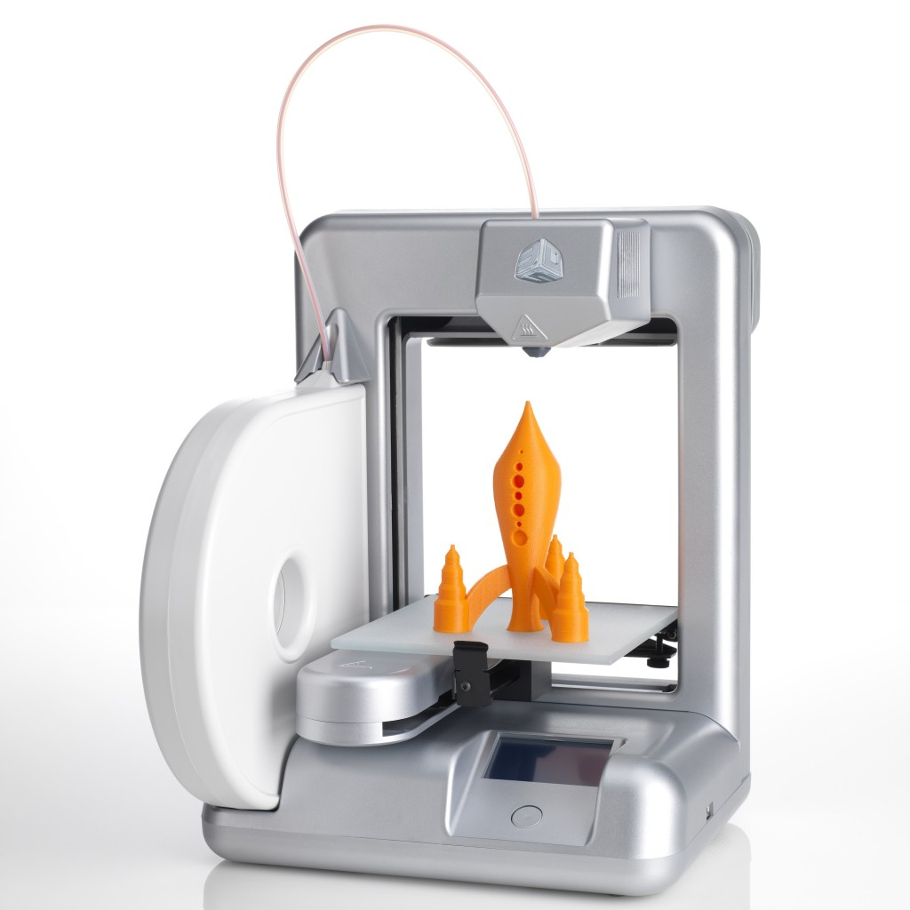
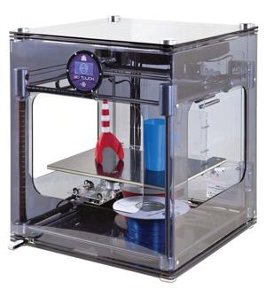
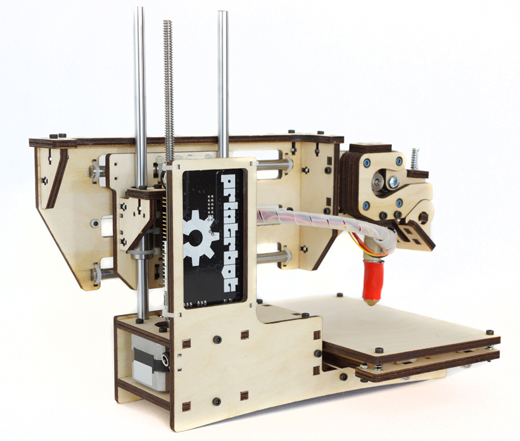
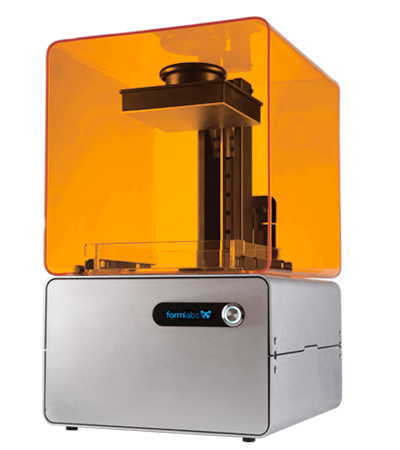

3D-Printere-header
Har du planer om å kjøpe 3D-Printer? Det finnes svært mange modeller, og prisene kan variere fra noen tusenlapper, til millioner av kroner. Idag regnes 3D-Printerne til under 30 000 kr som billige, disse har bare vært på markedet i 2-3 år. Det finnes flere ulike teknologier å velge mellom. Dersom du ønsker deg en printer til hjemmebruk, er nok en FDM-maskin stedet å begynne. Det står for Fused Deposition Modeling, og denne typen maskiner er de klart billigste. Videre finnes det nå rimelige SLA og DLP maskiner som er en nyere teknologi som gir bedre printing. Les mer om ulike typer maskiner nedenfor!
Er du interessert i 3D-Printere? Med en 3D-Printer kan du skrive ut alle mulige rare plastdingser hjemme i din egen stue. Det er til og med blitt printet ut fullt fungerende våpen med enkle 3D-printere. Av andre ting kan også nevnes flytende metall, mikrobatteri og NASA har faktisk skrevet ut rakettdeler! Printerne for hjemmebruk idag er foreløpig ganske enkle og begrenser seg til å skrive ut ting i plast. Likevel er det masser av ting du kan lage og potensielt er det penger å spare på å skaffe seg en 3D-Printer. Lær mer om de ulike modellene nedenfor!
Utvalgte modeller:
Cube
En FDM printer i øvre sjikt. Cube fra
Pris: Rundt 12 000 kr.
BFB 3Dtouch
3Dtouch er av de dyrere "billigprinterne".
Pris: Rundt 30 000 kr.
RepRap

RepRap er i seg selv en ganske enkel
ProJet 660

Dette er en "high end" maskin
Pris: Fra 500 000 kr.
Printrbot Simple
En kjempebillig FDM-printer fra
Amerikansk pris: Rundt 2400 kr.
Form1
Form1 bruker stereolitografi (SLA),
Pris: Fra 20 000 kr + frakt + avgifter.